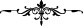

Nübüvvet hânedanını kaybetti, küfre yandaş oldu.
Birkaç gün süreyle ashâb-ı kehf ’in köpeği,
İnsanlara yoldaş olup hak etti insan gibi cennete girmeyi.
Mevlânâ Celâleddîn (k.s.) da aynı konu ile ilgili olarak şöyle der:
Eğer sen taş, kaya ve mermer isen bile,
Mücevher olursun erer isen ehl-i dile.
Cenâb-ı Hak, cümlemizi velîlerinin yoluna ve sevdikleri ile arkadaşlık etmeye iletsin,
âmin.